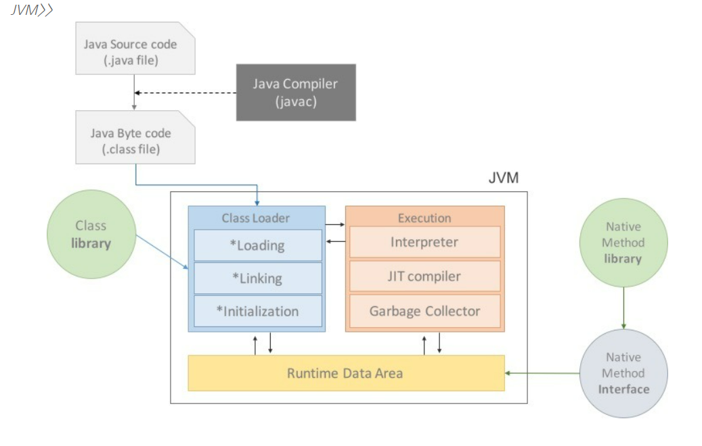
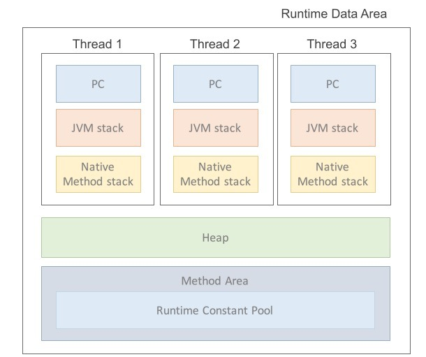

Java Virtual Machine
1. JVM이란
- 자바를 실행하기 위한 가상 기계(머신)로서, 바이트 코드를 실행할 수 있는 주체. 그리고 자바 바이트 코드를 OS에서 어떻게 실행할지에 대한 표준 스펙. JVM 자체는 OS에 종속적임.
- 가상 머신이란?
- 소프트웨어로 구현된 하드웨어를 뜻하는 넓은 의미의 용어. 프로그램의 실행을 위해 물리적 머신과 유사한 머신을 소프트웨어로 구현한 것.
- 자바는 WORA(Wirte Once Run Anywhere)를 위해 이러한 가상 머신을 기반으로만 동작하도록 설계되었음.
- 가상 머신이란?
2. 자바 프로그램의 실행과 JVM 구조

- JVM은 크게 Class Loader와 Execution Engine, Runtime Data Area로 나누어짐.
2.1 자바 프로그램의 실행 과정
(1) 프로그램 실행시 JVM은 OS로부터 프로그램이 필요로 하는 메모리를 할당받고, JVM은 이러한 메모리를 용도에 따라 여러 영역으로 나누어 관리함.
(2) 자바 컴파일러(javac)는 자바 소스코드(.java)를 읽어들여 자바 바이트코드(.class)로 변환시킴.
(3) Class Loader를 통해 class 파일들을 JVM으로 로딩.
(4) 로딩된 class파일들은 Execution Engine을 통해 해석됨.
(5) 해석된 바이트코드는 Runtime Data Areas에 배치되어 실질적인 수행이 이루어지며,
(6) 이러한 실행과정 속에서 JVM은 필요에 따라 Thread Synchronization과 GC같은 관리작업을 수행함.
2.2 JVM 구조
1. Class Loader
- JVM내로 클래스(.class)를 로드하고 링크를 통해 배치하는 작업을 수행하는 모듈.
- 로딩(Loading)
클래스 로더가 .class인 파일의 위치를 찾아 JVM에 올려놓는 과정. 그 내용에 따라 적절한 바이너리 데이터를 만들고 Method Area에 저장하는데, 저장되는 데이터로는 Data Type, 메서드와 변수, FQCN이 있음.
TODO : 3가지 클래스 로더와 작동 원칙은 추후 포스트
- 링킹(Linking)
.class 파일 형식이 유효한지 체크하는 Verify, 클래스 변수와 기본값에 필요한 메모리를 준비(메모리 할당과 기본값으로 세팅)하는 Prepare, 그리고 *심볼릭 레퍼런스를 메모리 영역에 있는 실제 레퍼런스로 교체하는 Resolve(optional).
*심볼릭 레퍼런스 : 기본 자료형을 제외한 모든 타입을 명시적인 메모리 주소 기반의 레퍼런스가 아니라, 실행시 링크할 수 있도록 심볼릭 레퍼런스(참조하는 대상의 이름)만을 가지고 있고 런타임 시점에 실제 물리적인 주소로 대체됨
- 초기화(Initialization)
Prepare 단계에서 확보한 메모리 영역에 클래스의 static 값들을 할당하는 단계.(슈퍼 클래스 및 정적 필드의 초기화)
2. Execution Engine
- 클래스를 실행시키는 역할(런타임 모듈). 클래스 로더가 JVM 내의 런타임 데이터 영역(Method Area)에 배치한 바이트 코드를 실행.
- 실행 방식을 기준으로 두 가지가 있음.
Interpreter 방식
실행 엔진은 자바 바이트코드를 명령어 단위로 읽어서 실행하는데, 바이트 코드를 한 라인씩 읽고 운영체제가 실행할 수 있도록 기계어로 변경. 이 과정에서 속도 문제가 발생.
JIT(Just In Time) 방식
인터프리터 방식의 단점을 보완. 인터프리터 방식으로 실행하다가 적절한 시점에 바이트코드 전체를 컴파일하여 네이티브 코드로 변경.
TODO : 컴파일 임계치 등 보완.
- Garbage Collector(GC) Runtime Data Area중 Heap 영역에 더이상 사용하지 않고 자리만 차지하고 있는 객체들을 제거하는 역할. GC 수행하는 도안 GC 실행 쓰레드 외 모든 쓰레드가 일시정지.
TODO : 추후 별도 포스트
3. Runtime Data Area
JVM이 프로그램을 수행하기 위해 운영체제로부터 할당받는 메모리 영역. 목적에 따라 5개의 영역으로 나뉘며 크게 두 가지로 분류됨.

각 쓰레드별로 생성, 소멸되는 PC Register, JVM Stacks, Native Method Stack
JVM 시작시 생성되며 종료시 소멸되는 Method Area, Heap. (모든 쓰레드간 자원 공유)
- PC Registers
<!– 우선 프로그램의 실행은 CPU에서 instruction을 수행함으로써 이루어지는데, 이 명령(instruction)은 더하기 빼기와 같은 opcode와 0개 이상의 피연산자 operand로 구성된다. 이러한 요소들을 임시로 저장하기 위한 CPU 내의 기억장치를 레지스터라고 하는데,
JMV은 Stack-Base로 작동함. (non Register-Base). 즉 CPU에 직접 instruction 수행하지 않고 Stack에서 Operand를 뽑아내 Runtime Data Area의 PC register라는 별도 공간에 저장하는 방식을 취하고 있는 것.(?) –>
JVM은 여러 쓰레드의 동시 실행을 지원하는데, 각각의 쓰레드는 자신의 프로그램 카운터를 가지고 있음. 프로그램 카운터는 다음 번에 실행할 명령어 주소를 기억하는 레지스터. JVM 쓰레드는 어느 시점에서든 단일 메서드의 코드, 즉 해당 스레드의 현재 메서드를 실행함.(?) 만약 메서드가 native 하지 않다면, PC 레지스터는 실행중인 JVM 명령의 주소값을 저장한다. 쓰레드에서 수행되는 메서드가 native 하다면, JVM PC register의 값은 undefined가 저장된다. 또한 PC register는 복귀할 위치의 주소값 혹은 특정 플랫폼의 native pointer 저장할 수 있음.
JVM Stacks JVM 쓰레드는 각각이 private한 JVM stack을 가지고 있는데, 이곳에 primitive type의 데이터가 값과 같이 할당되고 Heap 영역에 있는 객체 데이터의 참조 값이 할당된다. 또한 메서드가 수행될 때마다 생성되며 메서드 수행 완료시 destroy됨(지역변수).
Native Method Stacks Java 외의 언어로 작성된 네이티브 코드를 위한 메모리 영역으로서, 보통 C/C++ 등의 코드를 수행하기 위한 스택. Java Native Interface(JNI)를 통해 바이트 코드로 전환해 저장함.
Heap 모든 JVM 쓰레드들이 공유하는 메모리 영역. heap은 클래스의 인스턴스 혹은 배열이 할당되는 run-time 메모리 영역. 객체 내부에는 클래스의 멤버(필드, 메서드, 이너 클래스. stack 영역에는 참조 값이 저장되었다면, Heap 영역에는 해당 참조값이 가리키는 실제 데이터가 저장됨)가 위치함. JVM이 시작될 때 생성되며 GC에 의해 관리됨. GC는 예측할 수 없으며 수행하는 시스템의 사양에 따라 동작.
Method Area 클래스, 메서드, 정적 필드와 정적 메서드, 상숫값이 저장됨. 이렇게 여러 데이터가 저장되기 때문에 Class Area, Static Area, Constant Area 같이 여러 이름으로 불림.
Reference
https://docs.oracle.com/javase/specs/jvms/se8/html/jvms-2.html#jvms-2.5.1